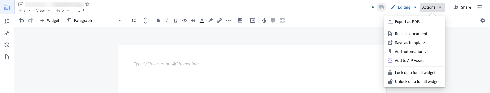
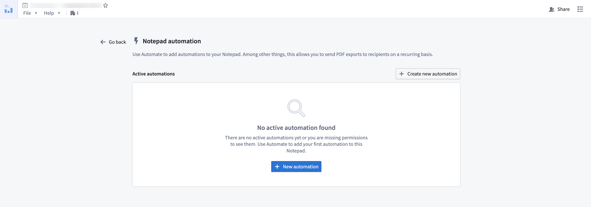
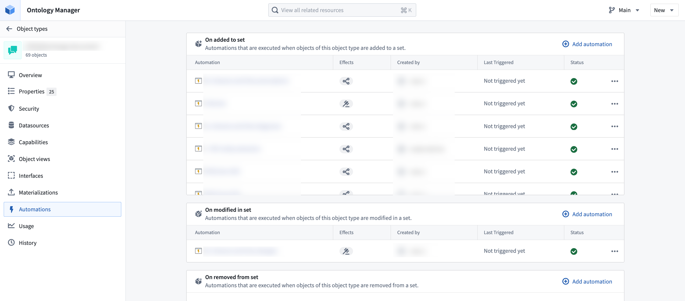
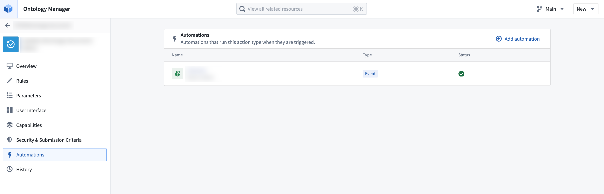

Automate integrates natively with the following Foundry applications:
Automate your AIP Logic to automatically apply or stage Ontology edits for human review. Automations can trigger on existing objects or when new objects are created.
How a Logic function is called from Automate depends on whether staged writes execution mode is enabled:
Learn how to automate your Logic function.
You can open an automation directly in Autopilot to visualize and manage your automation workflows. On the automation overview page, select Open in Autopilot from the Actions menu.
When you open Autopilot from an automation, Autopilot automatically generates a workbench with the selected automation and suggested related automations.
Contour dashboards can be attached to an automation notification effect for distribution by email.
Notepad documents and Notepad templates can be attached to an automation notification effect, enabling automated distribution of reports and digests with the latest data from Notepad.
To create an automation directly from Notepad, select the Actions dropdown menu in the top right and choose Add automation.

You will be directed to the automation overview page for the Notepad document. Select New automation to launch the automation creation wizard, which will open with the Notepad document pre-filled as an attachment.

After configuring and saving your automation, you will return to the automation overview page within your document, which now displays your newly created automation.
Create automations in Object Explorer by following the steps below:
3. After saving, select Monitor in the top right of the page to view all automations using this exploration as input. Newly created explorations will show an empty list.

4. Select Add new automation to open a simplified setup view for creating a new automation.

Ontology Manager enables users to define their Foundry Ontology, including object types and action types. Automate integrates with Ontology Manager in two ways:


You can automate your time series search logic in Quiver so that periods of interest in your time series data can be saved as events in the Ontology.